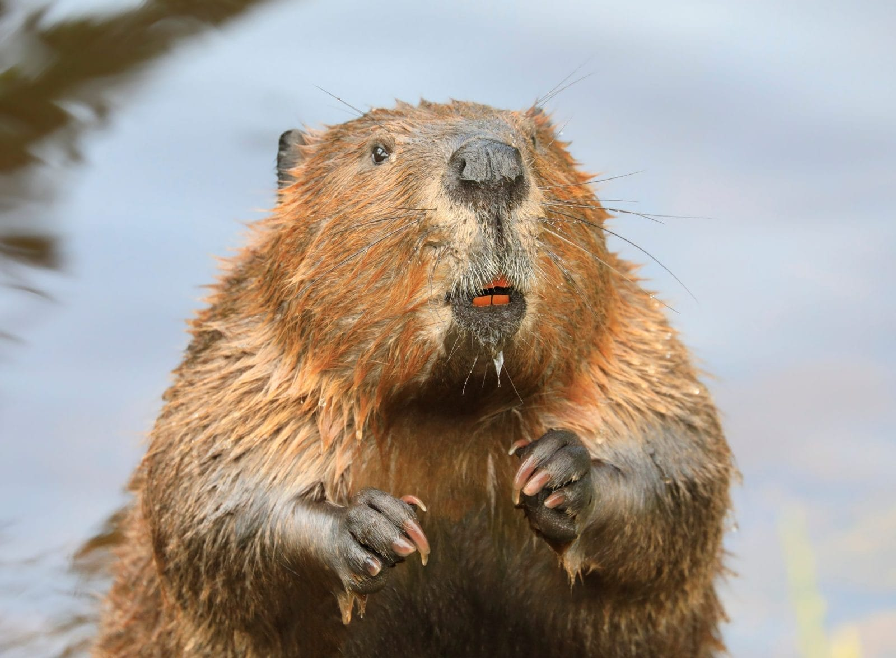
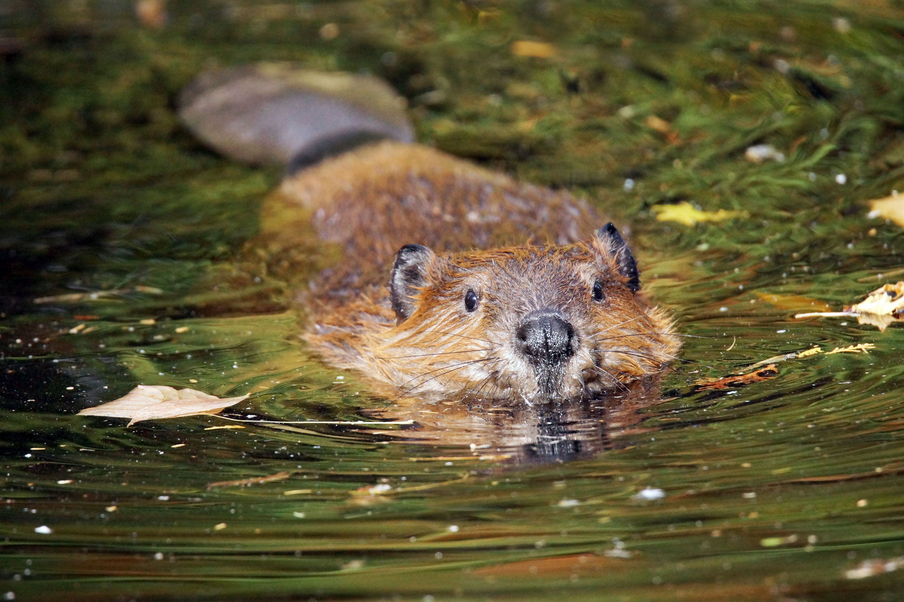
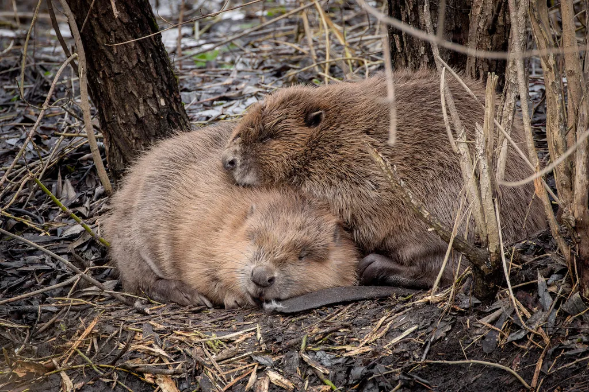
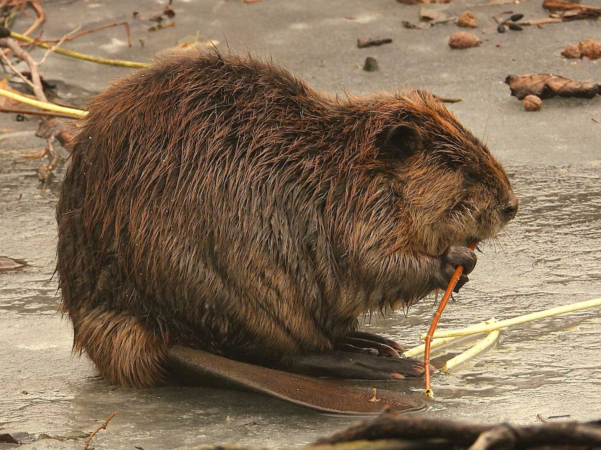
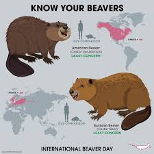
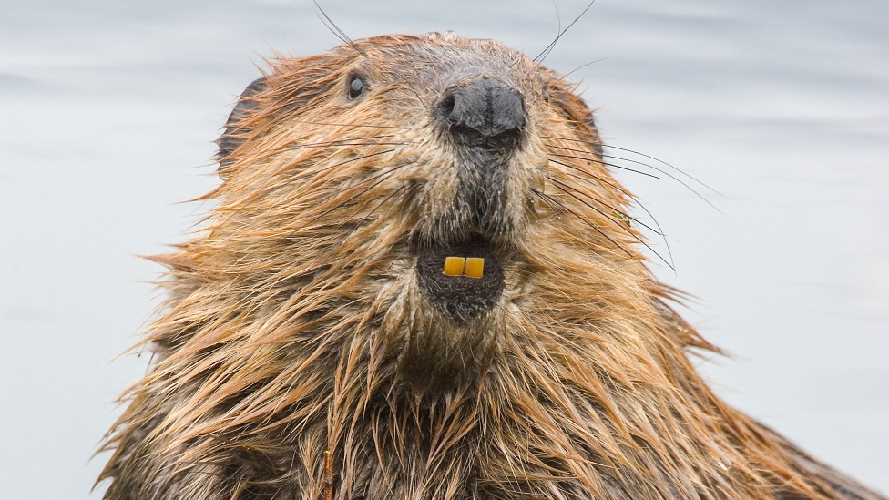
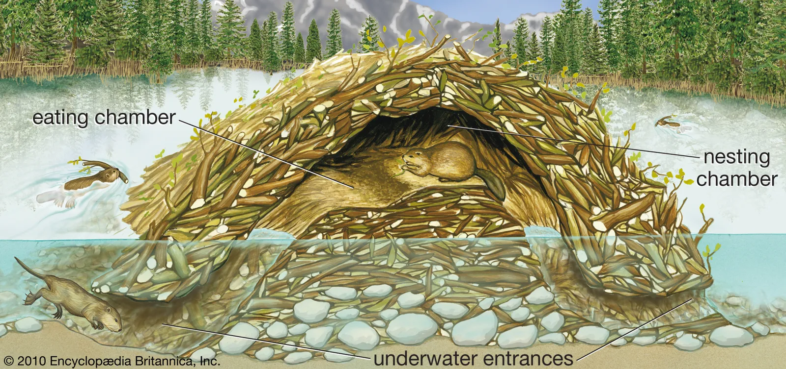
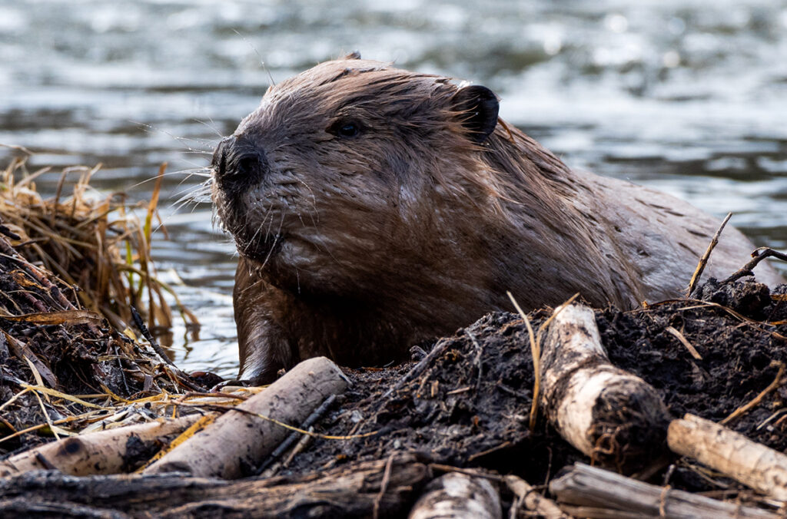
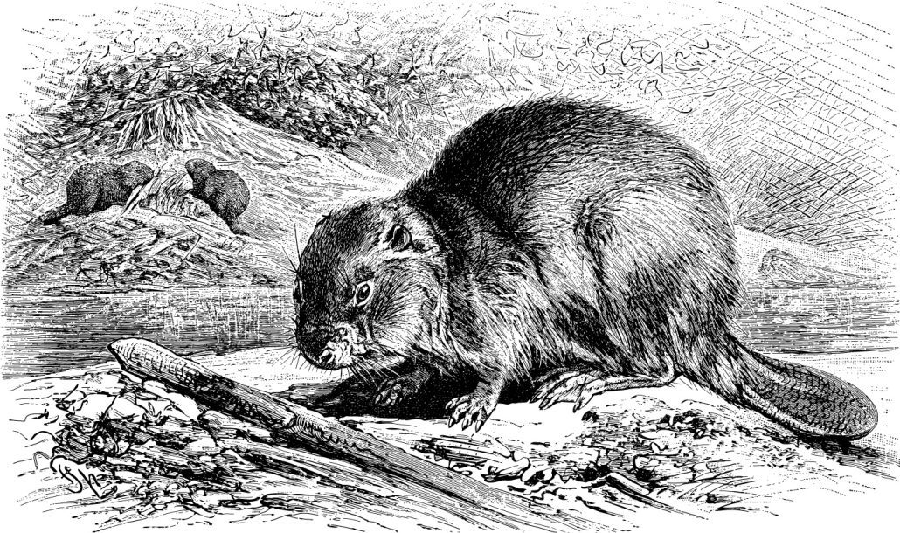

BEAVERS!

This website has many cool resources to explore highlights of the amazing world of beavers. Here you can find videos, songs, books, and facts all about our rodent friends.
What is a beaver?

The Beaver is a large semi-aquatic rodent native to North America. It is the largest rodent in North America and second largest in the world, only behind the capybara in South America. Beavers have orange teeth and are known for building dams and lodges, often nicknamed the "engineers of the natural world".

The Beaver, more specifically the North American Beaver (Castor canadensis), is the national animal of Canada.
Fun Facts!
Beavers produce castoreum, a yellowish-brown, vanilla scented, oily secretion. Due to their scent, fur, and taste, beavers were hunted by the Europeans to near extinction. In 1937, 7 North American beavers were brought to Finland in an attempt to revive beaver populations throughout Eurasia. However, North American beavers and Eurasian beavers are in fact different, though this wasn’t discovered until the 1970s, and by then it was already too late.

The differences between the two species are slim, mostly being in physical appearance. The main differences between American and European beavers are:
- American beavers have a more rounded tail while European beavers have a more triangular shaped tail.
- American beavers have smaller, more widely spaced nostrils compared to European beavers.
- European beavers are generally a lighter color than American beavers. Often having a reddish-brown or golden-brown hue compared to the darker brown/chestnut color of American beavers.
- American beavers have 40 chromosomes, while European ones have 48.
- North American beavers have been found to be more active in dam and lodge building. (Scientists attribute this difference to American beavers having longer shin bones, which gives them a greater range of motion.)

FACT #1: A beaver's front teeth (incisors) never stop growing which is partly why they gnaw on wood so much, even when they aren’t hungry. The orange coloration of the teeth are due to the iron inside of them.

FACT #2: Within a beaver dam there usually exists two dens. One for drying off after entering from the water, and another, dryer, main den for the family.

FACT #3: The beaver has a great sense of smell, hearing, and touch but a poor sense of sight. However, the beaver does have a third, transparent set of eyelids that allow it to see underwater without damaging their eyes.

FACT #4: FACT #4: In 1948, the Idaho Department of Fish and Game launched a program known as the beaver drop. The program involved the relocation of 76 beavers by airplane from northern Idaho down to central Idaho and then dropping the beavers by parachute. Only one beaver died during the operation.

FACT #5: Wood Buffalo National Park is the world's largest beaver dam, spanning almost half a mile (~800 meters). It is located in Alberta, Canada and is visible from space.
FACT #6: The Native Americans greatly respected beavers. Some indigenous groups even referred to them as “Little People”.
